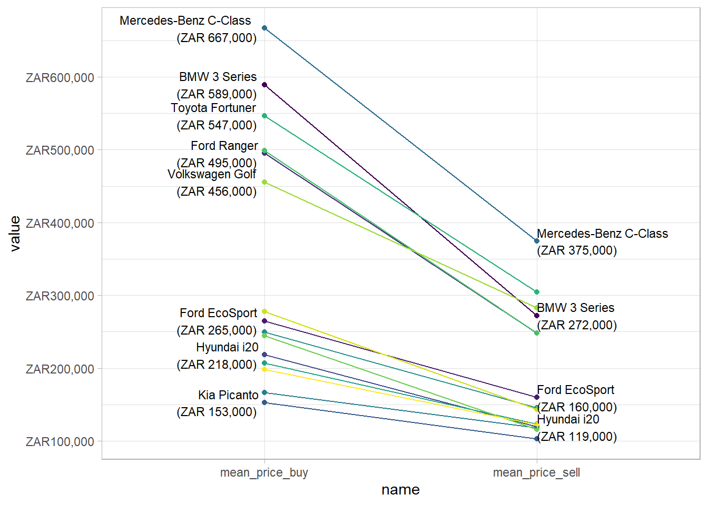

Blog post draft
Purpose
Draft of blog for Codera on car prices.
Structure
The plan is to showcase the gumtree data and some automation.
I can potentially build a site that has a breakdown of information you might want to know when selling or buying a car on Gumtree. This would help people set prices and find out the premium that they might get by selling the car through a registered dealer.
So far, I have a simple model that predicts price wrapped in a Shiny app:
You can change the inputs in the dropdowns and sliders and see a predicted price that the car could be advertised for on Gumtree.
I want to improve it in two ways. First I want to add an ensemble model that includes a few non-linear regression models. At the moment it just uses a penalized linear regression model with no interaction terms. Second, I want to add a NLP model to help people use the right keywords for higher prices in their own adverts. This can be done with a simple
In the meantime we can make a short post on the drop off in advertised prices on Gumtree.
Price drop off
Say you want to buy a five-year-old second hand car with 30,000km on the odometer, drive it for three years (averaging 15,000 km per year) and then sell it again.
Which is a good car to choose, to minimise your capital depreciation?
In the figure below I show the difference in asking prices for the situation described above for the 15 most popular models.

Here, the flatter the line, the smaller the difference between the price you would buy the car for and then sell it on for.
We can put this information into a table:
| Which cars hold their value on gumtree? | |||
| 15 most popular makes and models on gumtree Car purchased at 5 years old, with 30k km, driven for three years | |||
| Make & model | Purchase price | Sale price | Retained value |
|---|---|---|---|
| Nissan NP200 | R166,000 | R118,000 | 71.15% |
| Kia Picanto | R153,000 | R103,000 | 67.20% |
| Volkswagen Golf | R456,000 | R283,000 | 62.01% |
| Volkswagen Polo Vivo | R198,000 | R123,000 | 61.94% |
| Ford EcoSport | R265,000 | R160,000 | 60.29% |
| Toyota Corolla Quest | R207,000 | R123,000 | 59.44% |
| Toyota Corolla | R250,000 | R145,000 | 58.23% |
| Mercedes-Benz C-Class | R667,000 | R375,000 | 56.16% |
| Toyota Fortuner | R547,000 | R305,000 | 55.73% |
| Hyundai i20 | R218,000 | R119,000 | 54.71% |
| Volkswagen Polo | R278,000 | R144,000 | 51.76% |
| Ford Ranger | R495,000 | R248,000 | 50.12% |
| Toyota Hilux | R499,000 | R248,000 | 49.75% |
| Toyota Yaris | R244,000 | R116,000 | 47.35% |
| BMW 3 Series | R589,000 | R272,000 | 46.20% |
| Note: Retained value shows sale price as a percentage of purchase price | |||
There is a surprising amount of dispersion in how much value is held among the 15 most popular makes and models. It ranges from north of 70 percent for the Kia Picanto, to below 50 percent for the BMW 3 series.
In addition, we can see that relatively cheap cars, like the Nissan NP200 and Kia Picanto hold their value well. Further, the makes and models which are highly desired like the WV Golf and Polo Vivo also hold their value well. The WV Golf stands out as relatively expensive (nearly 3X the asked purchase price of the Kia Picanto) but still holds 62 percent of its value 45,000 km and three years later.